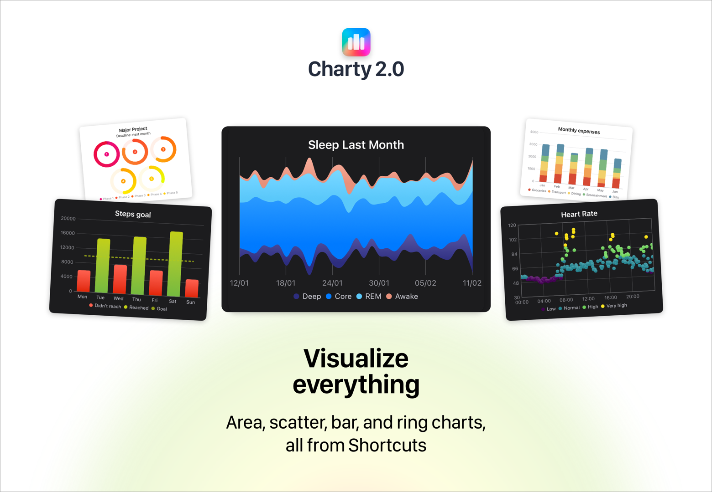
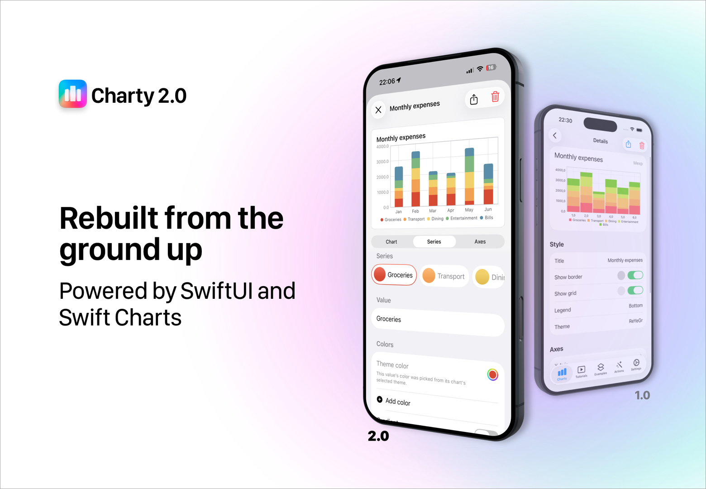

Five years after Theseus, Charty's biggest update ever is almost here: 2.0 – Aphrodite. This isn't an update so much as a brand new app: every screen, every action and every chart has been rebuilt from scratch.

Rebuilt from the ground up
Charty 2.0 is written entirely in SwiftUI, renders its charts with Apple's SwiftCharts framework, and exposes all of its actions through AppIntents — the modern foundation behind Shortcuts. Beyond making the app faster and more native, this rebuild makes Charty dramatically easier to evolve, so updates can come more often.

Every chart type made the jump: bar, line, area, scatter, pie, donut and rings — all rendered natively, in light and dark mode.


Widgets that actually update
The number one complaint about Charty has always been widgets not refreshing. That era is over: in 2.0, widgets reliably update whenever your data changes. Run a shortcut, watch your Home Screen follow along — the way it always should have worked.
Four widget styles are available in multiple sizes, so your most important numbers are always a glance away.


More beautiful than ever
Aphrodite earns her name with a full styling upgrade: new color themes throughout the app, and — a first for Charty — gradients that can be applied to any series. Your charts have never looked this good.


26 actions, fully documented
Charty 2.0 ships with 26 actions covering chart creation, series management, styling, data processing and export. And to help you get the most out of them, the new examples come with detailed instructions explaining what each action in the shortcut is doing — learning Charty by example is now built into the app.
And when your chart is ready, exporting it as an image and sharing it anywhere takes a single action.
A new business model
Since launch, Charty has been a freemium app with a one-time $4.99 unlock. Starting with 2.0, Charty moves to a subscription: $0.99/month or $9.99/year. The free tier still gives you 5 essential actions to chart with.
If you bought the original Premium unlock: thank you — you keep full access to everything in Charty 2.0, forever, no subscription needed. Features added in future updates may require a subscription, but nothing you have today is being taken away. The details are in the FAQ.
What didn't make the cut
Being honest about the trade-offs of a full rewrite: 2.0 launches without the Portuguese, French and Spanish localizations, and the in-app video tutorials are gone, replaced by the new documented examples. Localization may return in the future.
The codename
Charty 2.0 is codenamed Aphrodite!
Aphrodite is the greek goddess of beauty — and for the most beautiful version of Charty ever shipped, rebuilt around themes, gradients and SwiftCharts, no other name would do.
Charty 2.0 is coming to the App Store very soon. Follow along on Bluesky, Mastodon or Reddit!